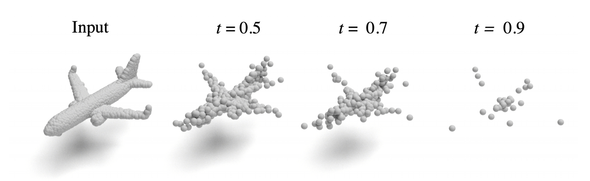
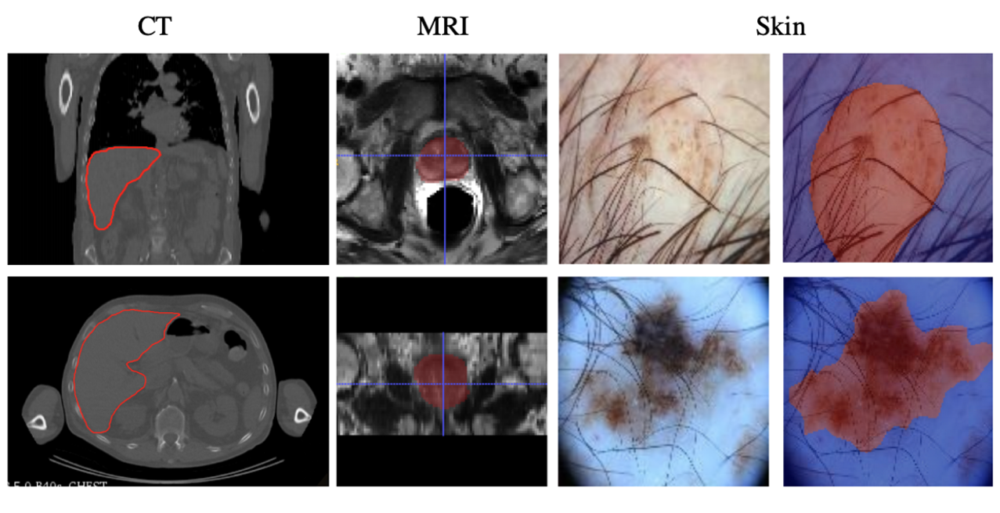

|
I am a Principal AI Research Scientist at Autodesk AI Lab and an Adjunct Research Professor at the School of Computing Science, Simon Fraser University (SFU). I completed my PhD in Computing Science at SFU under the supervision of Professor Ghassan Hamarneh. I have previously worked as machine learning (and computer vision) research scientist in startup environments and have had multiple research visits/internships at research institutions such as MILA (Montreal, Canada), Siemens Healtheneers (Princeton, USA), and Imagia (Montreal, Canada). Outside of work, I enjoy soccer and running track (100m sprinting); previously won several inter-university medals in the same fields. |

|
|
My research focus is on creating trustworthy real-world machine learning systems which don't fail (drastically) in case of domain shifts. In terms of applications, I apply my research findings mostly to 2D and 3D image data. |
|
|
|
Robust Representation Learning via Perceptual Similarity Metrics
Saeid Taghanaki , Kristy Choi, Amir Khasahmadi, Anirudh Goyal, ICML 2021 (Spotlight) [paper] |
|
RobustPointSet: A Dataset for Benchmarking Robustness of Point Cloud Classifiers
Saeid Taghanaki , Jieliang Luo, Ran Zhang, Ye Wang, Pradeep Kumar Jayaraman, Krishna Murthy Jatavallabhula, ICLR 2021, RobustML Workshop [paper] |
|  |
PointMask: Towards Interpretable and Bias-Resilient Point Cloud Processing
Saeid Taghanaki , Kaveh Hassani, Pradeep Kumar Jayaraman, Amir Khasahmadi, Tonya Custis, ICML 2020, Human Interpretability in Machine Learning Workshop (Oral) [paper] |

|
A Kernelized Manifold Mapping to Diminish the Effect of Adversarial Perturbations
Saeid Taghanaki , Kumar Abhishek, Shekoofeh Azizi, Ghassan Hamarneh, CVPR 2019 [paper] |

|
InfoMask: Masked Variational Latent Representation to Localize Chest Disease
Saeid Taghanaki , Mohammad Havaei, Tess Berthier, Francis Dutil, Lisa Di Jorio, Ghassan Hamarneh, Yoshua Bengio, MICCAI 2019 (Early accept) [paper] |
|
Improved Inference via Deep Input Transfer
Saeid Taghanaki , Kumar Abhishek, Ghassan Hamarneh, MICCAI 2019 (Early accept) [paper] |
|  |
Select, Attend, and Transfer: Light, Learnable Skip Connections
Saeid Taghanaki , Aicha Bentaieb, Anmol Sharma, S. Kevin Zhou, Yefeng Zheng, Bogdan Georgescu, Puneet Sharma, Sasa Grbic, Zhoubing Xu, Dorin Comaniciu, Ghassan Hamarneh, MICCAI 2019, MLMI Workshop (Oral) [paper] |

|
Vulnerability Analysis of Chest X-Ray Image Classification Against Adversarial Attacks
Saeid Taghanaki , Arkadeep Das, Ghassan Hamarneh, MICCAI 2018, Understanding and interpreting machine learning in medical image computing applications Workshop (Oral) [paper] |
|
|
|
Deep Semantic Segmentation of Natural and Medical Images: A Review
Saeid Taghanaki , Kumar Abhishek, Joseph Paul Cohen, Julien Cohen-Adad, Ghassan Hamarneh, Artificial Intelligence Review, 2020 (IF=5.747) [paper] |
|
Combo Loss: Handling Input and Output Imbalance in Multi-Organ Segmentation
Saeid Taghanaki , Yefeng Zheng, S. Kevin Zhou, Bogdan Georgescu, Puneet Sharma, Daguang Xu, Dorin Comaniciu, Ghassan Hamarneh, Computerized Medical Imaging and Graphics, 2019 (IF= 3.75) [paper] |
|
Segmentation-Free Direct Tumor Volume and Metabolic Activity Estimation from PET Scans
Saeid Taghanaki , Nouirin Duggan, Hilgan Ma, Anna Celler, Francois Benard, Ghassan Hamarneh, Computerized Medical Imaging and Graphics (IF=3.75) [paper] |

|
Pareto-Optimal Multi-Objective Dimensionality Reduction Deep Auto-Encoder for Mammography Classification
Saeid Taghanaki , Jeremy Kawahara, Ghassan Hamarneh, Computer Methods and Programs in Biomedicine, 2017 (IF=3.84) [paper] |
|
Geometry Based Pectoral Muscle Segmentation from MLO Mammogram Views
Saeid Taghanaki , Yonghuai Liu, Brandon Miles, Ghassan Hamarneh, IEEE Transactions on Biomedical Engineering, 2017 (IF=4.78) [paper] |

|
Nonlinear Feature Transformation and Genetic Feature Selection: Improving System Security and Decrease Computational Cost
Saeid Taghanaki , Ansari M. R., Zamani B., Mousavi S. A., ETRI Journal, 2012 (IF = 1.32) [paper] |
|
|

|
Jigsaw-VAE: Towards Balancing Features in Variational Autoencoders
Saeid Taghanaki , Mohammad Havaei, Alex Lamb, Aditya Sanghi, Ara Danielyan, Tonya Custis, arXiv, 2020 [paper] |
|
Signed Input Regularization
Saeid Taghanaki , Kumar Abhishek, Ghassan Hamarneh, arXiv, 2019 [paper] |
|
Design style by Jon Barron |